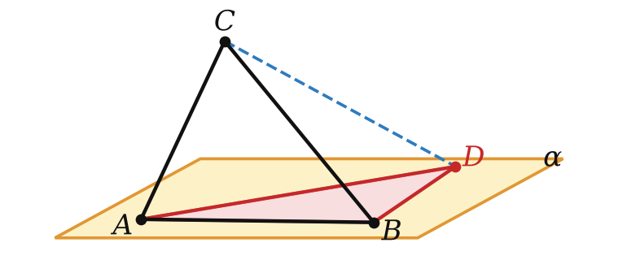
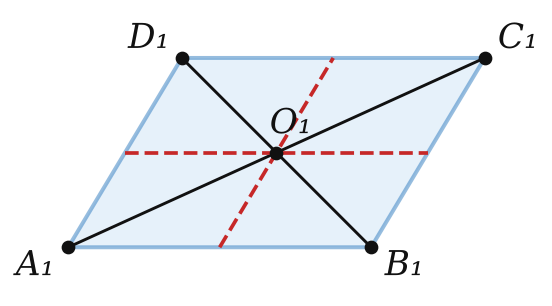
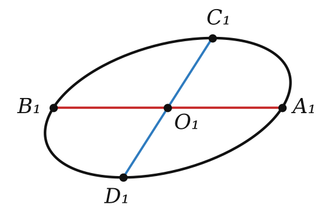
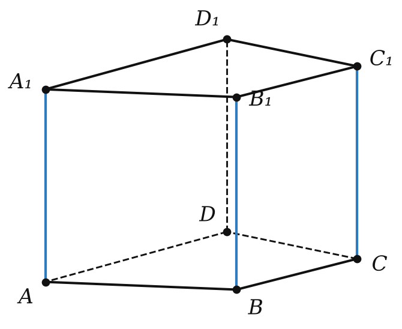
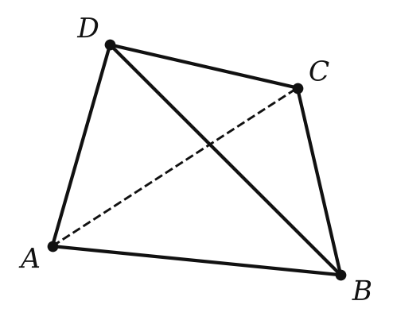
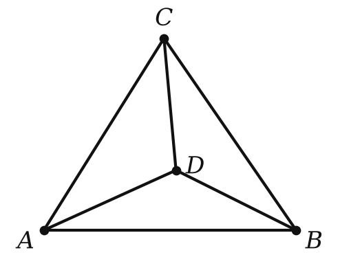
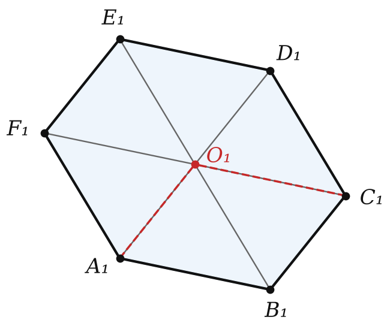
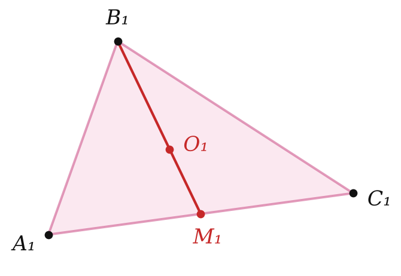

Теория
Любой рисунок пространственной фигуры в тетради — это её параллельная проекция (изображение). На прошлом уроке мы выяснили, что при проектировании сохраняется (прямые, параллельность, отношения отрезков на одной прямой и на параллельных прямых) и что теряется (длины, углы). Сегодня поймём, как из этого получаются правила рисования и как строить на рисунке то, чего на нём «не видно»: высоты, центры, биссектрисы.
Изображения многоугольников
Если направление проектирования параллельно плоскости многоугольника, изображение — отрезок. Дальше считаем, что этого не происходит.
Треугольник изображается треугольником. Причём любой треугольник может быть изображением любого другого — например, равностороннего. Покажем это. Пусть в плоскости α дан произвольный треугольник ABD. Построим на стороне AB равносторонний треугольник ABC, не лежащий в α, и выберем направление проектирования вдоль прямой CD. Тогда C перейдёт в D, а A и B останутся на месте: изображением равностороннего ABC стал наш произвольный ABD.

Поэтому на изображении нельзя «увидеть» равнобедренность, прямой угол или биссектрису. Зато медиана изображается медианой (середина → середина), а точка пересечения медиан — точкой пересечения медиан. Высоты и биссектрисы в общем случае в высоты и биссектрисы не переходят.


- Параллелограмм (в том числе прямоугольник, ромб, квадрат) изображается параллелограммом — параллельность сохраняется.
- Трапеция изображается трапецией, причём отношение оснований сохраняется (основания параллельны). Но равнобокость или прямой угол могут пропасть.
- Окружность изображается эллипсом. Изображение центра — центр эллипса; любой диаметр окружности переходит в отрезок, который центр эллипса делит пополам.
На изображении нельзя проводить перпендикуляры «по угольнику» и делить углы пополам транспортиром — изображение углов не сохраняет. Строить можно только то, что выражается через параллельность и отношения отрезков на одной прямой.
Как строить на изображении: главная идея
Хочешь построить изображение высоты, центра, биссектрисы? Сначала реши задачу на настоящей фигуре: выясни, через какие параллельные прямые или через какие отношения на отрезках задаётся нужная точка. Потом перенеси это на рисунок — параллельные рисуй параллельными, отношения сохраняй.
- Высота равнобедренного треугольника к основанию — это медиана: соединяем вершину с серединой основания.
- Центр правильного треугольника — точка пересечения медиан (делит каждую в отношении 2 : 1 от вершины).
- Биссектриса делит противоположную сторону в отношении прилежащих сторон: если AB : BC = 3 : 4, то и на изображении A₁L₁ : L₁C₁ = 3 : 4.
- Перпендикуляр из центра квадрата к стороне приходит в её середину — на изображении он параллелен соседней стороне.
Изображения пространственных фигур

Призму рисуют так: изображают основание (любым многоугольником, который может быть его проекцией), через вершины проводят параллельные прямые и откладывают на них равные отрезки — получаются вершины второго основания. Соединяем их и делаем невидимые рёбра штриховыми.
Куб и прямоугольный параллелепипед обычно рисуют, выбирая плоскость изображения параллельной передней грани: тогда передняя и задняя грани изображаются равными квадратами (прямоугольниками) в натуральную величину, а остальные — параллелограммами. Так нарисованы все кубы в нашем курсе.


Тетраэдр. Немецкие математики Карл Польке и Герман Шварц доказали: изображением любого тетраэдра может служить (с точностью до подобия) любой четырёхугольник вместе с диагоналями — и выпуклый, и невыпуклый. Это теорема Польке — Шварца.
Обратный взгляд на рисунок даёт красивый приём «выход в пространство»: плоский чертёж можно считать изображением пространственной фигуры и решать задачу в пространстве, где она бывает проще (так, например, доказывается теорема Дезарга из § 3).
Разбор примеров

Точки A₁, B₁, C₁ — изображения трёх соседних вершин A, B, C правильного шестиугольника ABCDEF. Постройте изображение всего шестиугольника.
1) На настоящей фигуре: центр O шестиугольника таков, что ABCO — ромб (все стороны равны радиусу описанной окружности), то есть параллелограмм.
2) На изображении параллелограмм остаётся параллелограммом: достраиваем A₁B₁C₁ до параллелограмма A₁B₁C₁O₁ — проводим через A₁ прямую ∥ B₁C₁, через C₁ прямую ∥ A₁B₁, их точка пересечения — O₁.
3) O — центр симметрии шестиугольника: D, E, F симметричны A, B, C относительно O. Середина сохраняется, поэтому откладываем на продолжениях A₁O₁, B₁O₁, C₁O₁ за точку O₁ равные отрезки — получаем D₁, E₁, F₁.

Треугольник A₁B₁C₁ — изображение равнобедренного треугольника ABC (AB = BC), причём AB : AC = 5 : 6. Постройте изображение центра O вписанной окружности.
1) На настоящей фигуре: центр вписанной окружности лежит на биссектрисе угла B, а в равнобедренном треугольнике она совпадает с медианой BM (M — середина AC).
2) O лежит и на биссектрисе угла A. В треугольнике ABM биссектриса AO делит BM в отношении BO : OM = AB : AM. Так как AM = AC/2, то AB : AM = 5 : 3.
3) На изображении: M₁ — середина A₁C₁, на отрезке B₁M₁ отмечаем точку O₁ так, что B₁O₁ : O₁M₁ = 5 : 3 (делим отрезок на 8 равных частей).
Трапеция A₁B₁C₁D₁ — изображение трапеции ABCD с основаниями BC = 6 и AD = 15. Меньшее основание изображения равно 4. Найдите большее.
Основания параллельны, поэтому по теореме 7.3 отношение сохраняется: A₁D₁ : B₁C₁ = 15 : 6. A₁D₁ = 4 · 15/6 = 10.
Боковые стороны трапеции не параллельны, поэтому их отношение на изображении может быть любым. Сохраняется только отношение отрезков на одной прямой или на параллельных прямых.
Задачи урока
Реши в тетради, к каждой задаче — чертёж. Разберём на занятии.
Тест к уроку
Домашнее задание
Задачи Д1–Д6 ниже — к каждой рисунок и построение. Из учебника: № 8.1, 8.4, 8.5, 8.9. Повторить, что сохраняется при параллельном проектировании (§ 7): все построения урока опираются на это.